terminal
cd C:/Users/<your_username>/ProjectsSummary
You will need Git and Github to make code contributions:
There are multiple ways to contribute to a Github repo, whether it is to report a bug, request a feature, or actively contribute to the code base.
To report a bug,
click on a repo and click on the Issues tab.
click the New issue button
click on the Bug Report tab
From here you will need to fill out the bug report along with steps to reproduce the behavior you’re seeing.
Do you have a feature that you want included in the code base?
click on a repo and click on the Issues tab.
click the New issue button
click on the Feature Request tab
From here you will need to fill out the feature request along with details
There is a discussions tab in our Github org. You can start discussions, ask questions, and share ideas here.
To contribute to a public repo in our Github org, please contact the repo owner to request read/write access. If you want to create a repo in the org, please contact frank.aragona@doh.wa.gov.
Before contributing any code, please read our security policies. There you will find our repo rules and instructions on how to set up pre-commit hooks.
Once granted access, follow the steps below to create a repo (Section 4) and/or collaborate on code (Section 6).
Once granted access to create a repo, you can go to our org and click Repositories > New repository or click here
This will take you to the Create a new repository screen. Please follow these instructions when filling it out:
Consider using a template unless you want to develop a repo from scratch. We have pre-built R, Python, and base templates that have Github Codespaces set up as well as .gitignore files and virtual environments.
Make sure the Owner name is NW-PaGe. Name your repository something descriptive and easy to type out. Avoid spaces and capital letters unless necessary.
The repo description can be filled out at any time after creating the repo
We don’t allow you to create a public repo initially. Please create a Private repo first, and then once you are ready to make it public you can.
Add a README file box..gitignore if the option is available (choose either R or Python)MIT license unless you know you want a different license more info hereWhether you have created your own repo or want to contribute to someone else’s repo, you will need to make a local clone of that repo on your personal machine.
To make a local clone of a repo, click on the green Code button when you’re in the main repo’s web page. In the local tab there are multiple ways to clone. For most of our work, I suggest creating an SSH key. If you are new to git/Github and on a Windows machine, I recommend installing the Github Desktop app and following the instructions below.
Cloning via HTTPS is a relatively quick process.
Code button: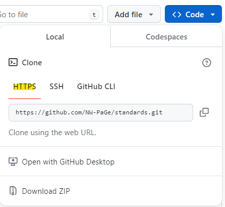
Copy the path that starts with https://, in this case it’s https://github.com/NW-PaGe/standards.git
In a terminal/command prompt, navigate to a folder of your choice (in windows I would make a folder called Projects here: C:/Users/<username>/Projects)
terminal
cd C:/Users/<your_username>/Projectshttps://github.com/NW-PaGe/standards.git with your path:terminal
git clone https://github.com/NW-PaGe/standards.gitterminal
git statusNOTE: the HTTPS method is good but it will require you to enter your username and a token every time you push a commit to the remote repo in Github. You will need to create a Personal Access Token (PAT) whenever you want to make a commit. If this is annoying to you, use the SSH or Github Desktop App methods.
Here’s a guide on making a PAT
Click on you Github profile icon in the upper right
Click Settings
Scroll down to Developer Settings
Select Personal access tokens (classic) and then Generate new token
When you make a commit you will need to input this personal access token when it asks for your password.
Do not store this token anywhere! Especially make sure it is not stored in your repo. This has tons of security risks and needs to be for singular use only
SSH is an excellent option for cloning a repo. It is similar to using an identifier to tell Github that you are, in fact, you. This video below is a great resource on how to set up the key. I will also write out the steps in the video below. Also, see the Github documentation for more information.
terminal
ssh-keygen -t ed25519 -C your@email.comIt should then ask if you want to make a passphrase. I recommend doing this
Get the pid
terminal
eval "$(ssh-agent -s)"terminal
touch ~/.ssh/configterminal
nano ~/.ssh/configssh/config
Host *
IgnoreUnknown AddKeysToAgent,UseKeychain
AddKeysToAgent yes
IdentityFile ~/.ssh/id_ed25519
UseKeychain yesTo save this file in nano, on your keyboard write CRTL+O then ENTER to save the file. Then CTRL+X to exit back to the terminal. You can also open this file through a notepad or other software. You could also search for the file in your file explorer and edit it in notepad if that is easier.
terminal
ssh-add ~/.ssh/id_ed25519In Github, go to your profile and the SSH + GPG Keys section
Click SSH Keys, add a title, and in the key location write your key. You can find your key in your terminal by writing:
terminal
cat ~/.ssh/id_ed25519.pubCopy the whole output including your email and paste it into the Github key location
terminal
ssh -T git@github.comNow you can clone a repo using the SSH key. Copy the SSH path and write this (replace the string after clone with your repo of choice):
terminal
git clone git@github.com:org/reponame.gitThe GitHub CLI is an excellent tool for not just cloning your repo, but for managing repositories and organizations from a terminal.
To install the CLI in Windos, I follwed the instructions provided in the Github CLI repo.
I normally install commands using Scoop, but you have many options here.
powershell
winget install --id GitHub.cliwinget upgrade --id GitHub.cligh auth loginI created a personal access token.
terminal
gh repo clone org/repo-nameYou can also now do some cool things with your org/repo like searching for strings, creating issues, and more. For example, here are the issues in this repo:
terminal
gh issue listoutput
Showing 3 of 3 open issues in NW-PaGe/standards
ID TITLE LABELS UPDATED
#7 add .gitignore documentation about 2 months ago
#3 Make sure all references are added to ... documentation about 5 months ago
#2 Fix cross reference links documentation about 5 months agoTo install in a linux terminal, I’m following the instructions provided in the Github CLI repo.
terminal
(type -p wget >/dev/null || (sudo apt update && sudo apt-get install wget -y)) \
&& sudo mkdir -p -m 755 /etc/apt/keyrings \
&& wget -qO- https://cli.github.com/packages/githubcli-archive-keyring.gpg | sudo tee /etc/apt/keyrings/githubcli-archive-keyring.gpg > /dev/null \
&& sudo chmod go+r /etc/apt/keyrings/githubcli-archive-keyring.gpg \
&& echo "deb [arch=$(dpkg --print-architecture) signed-by=/etc/apt/keyrings/githubcli-archive-keyring.gpg] https://cli.github.com/packages stable main" | sudo tee /etc/apt/sources.list.d/github-cli.list > /dev/null \
&& sudo apt update \
&& sudo apt install gh -yterminal
sudo apt update
sudo apt install ghterminal
gh auth loginI created a personal access token. In linux there are some issues with the command and using a browser fyi.
terminal
gh repo clone org/repo-nameYou can also now do some cool things with your org/repo like searching for strings, creating issues, and more. For example, here are the issues in this repo:
terminal
gh issue listoutput
Showing 3 of 3 open issues in NW-PaGe/standards
ID TITLE LABELS UPDATED
#7 add .gitignore documentation about 2 months ago
#3 Make sure all references are added to ... documentation about 5 months ago
#2 Fix cross reference links documentation about 5 months agoIf you’re new to Git or Github and are using a Windows machine, the GitHub Desktop app is a great option for managing git workflows.
Install the app
You will need to authenticate your account
Now you should be able to clone repos through the app. In Github, when you click on the Code tab you will see the option to open in Github Desktop:
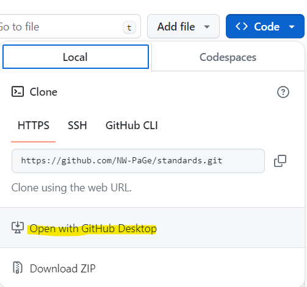
This will open up the desktop app and let you choose a file path for your Github repos. I recommend putting your repos into a Github or Projects folder in your local C drive, like this
C:/Users/yourname/Projects/<your-repo>/If you’re cloning many repos you should put the repos into folders separated by the Github org
C:/Users/yourname/Projects/<gh-org-name>/<repo-in-org>/Code collaboration can vary widely depending on the team and owner of the repo. Below I will describe how our team collaborates in Github. To summarize, in our system we prioritize preserving the main branch of a repo for production level code, and when we want to make changes we do it locally in a separate branch. We have rules for our commit messages, making pull requests (merging changes into the main branch), taging issues, release cycles, and documenting changes.
After creating a repo (Section 4) and/or cloning the repo (Section 5) into a your local machine, you can start writing and contributing code to the remote code base in Github.
terminal
git statusgit fetch to find changes and git pull to pull those changes into your local clone.terminal
git fetch
git pullterminal
git branch <insert your branch name here>terminal
git switch <your branch name here>Now you are working in the local branch that you created and you can begin writing code or making updates.
Once you make changes you can commit them to the local branch you created. This is like saving your work to the branch. The branch can be pushed to the remote repo in Github, so you can continually make changes and push them to the remote where they will be stored safely.
To make a commit, save your work and then in the terminal write git commit -m "<your message here", like this:
terminal
git commit -m "feat: this is a new feature!"Note that the -m is a parameter to let you write a commit message. Commit messages are important so that other collaborators can understand what changes you made. You can write a description like this
terminal
git commit -m "feat: this is a new feature!" "this is a description. I made this feature in the code"Also note that I am using the word feat in the commit message. This is important word that can trigger a github action. We’ll cover it below in Section 6.5
Now you have committed your changes, but your code has only been committed to a branch. In order to have your changes implemented in the main codebase you need to merge your branch into the main branch.
When working in a collaborative team setting it is important to have your team review the changes you made before implementing them into the main branch. Everyone makes mistakes, and this is an opportunity to vet your code and have everyone sign off on the changes you want.
After you make your commits, go back to Github in your browser and go to your repo. There should be a box that appears showing your commit and a button that says Compare & pull request
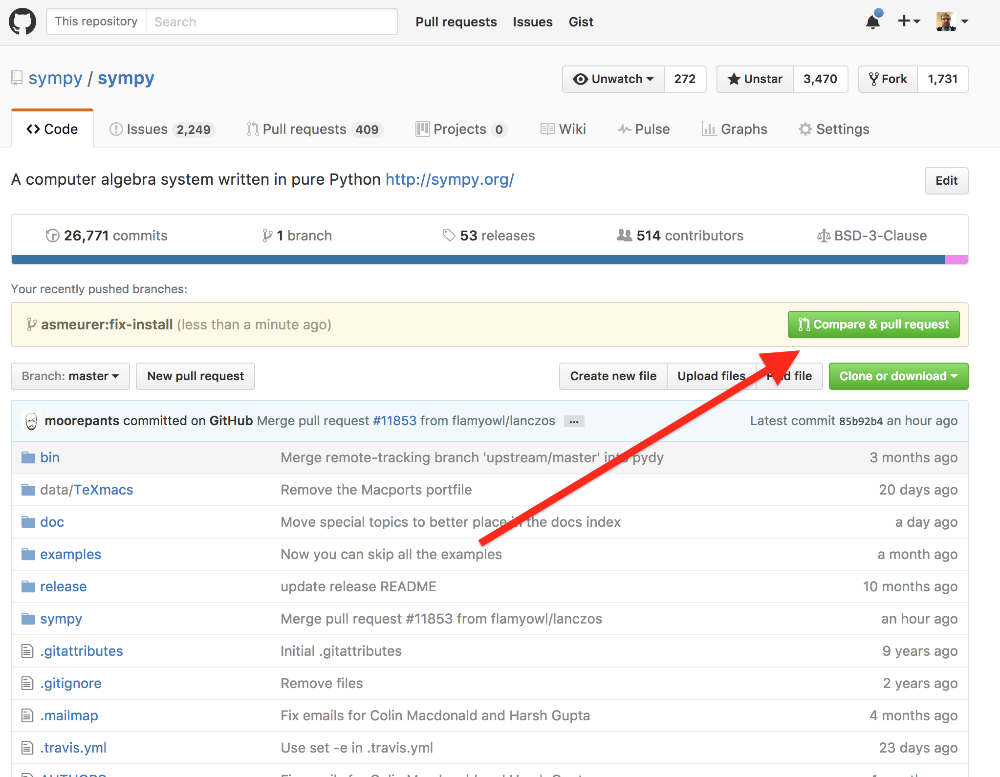
Click that button and it will bring you to the Open a pull request page.
Note that labels, milestones, and projects are a way to keep track of changes and issues in your project. I highly recommend setting them up, more below.
This should automatically send an email to the reviewers that there is code needed to be merged to a branch.

Typically your teammates and the repo admin will review your code and merge your branch into the main branch.
In Github, click on the Pull requests tab. Here you will see open pull requests and you can click on the one you want to merge.
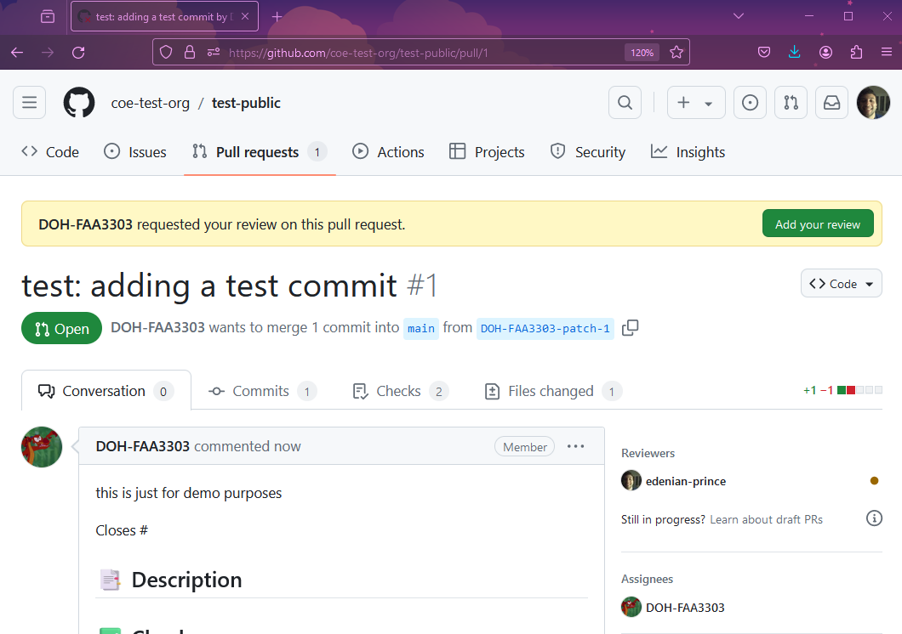
In the pull request you will see 4 tabs;
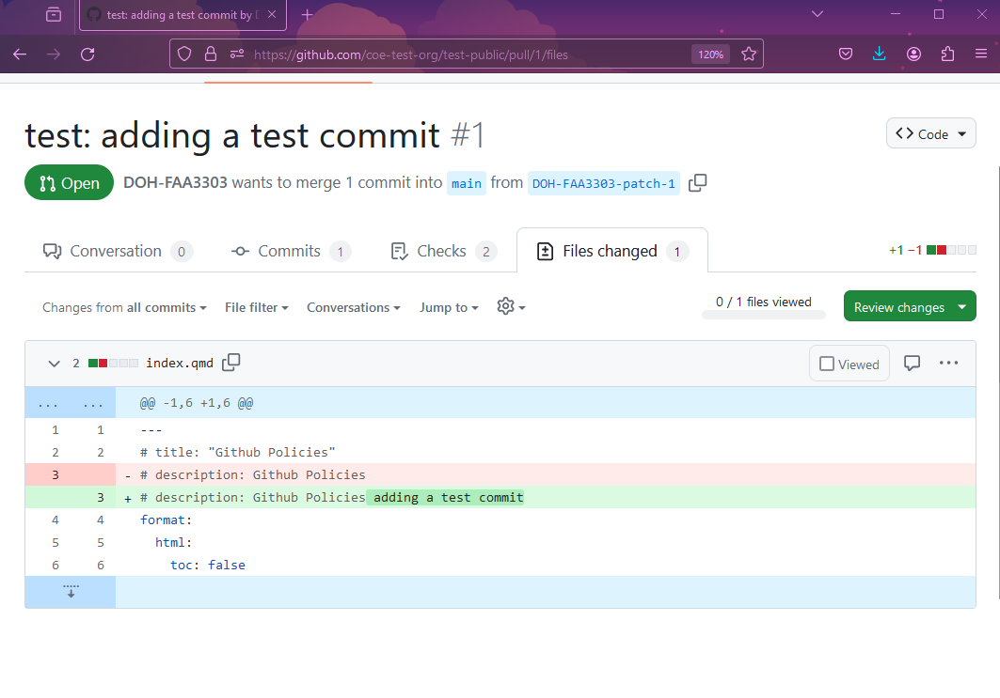
When you are comfortable with merging these changes, you can either leave a comment, approve, or request further changes by clicking on the Review changes dropdown menu.
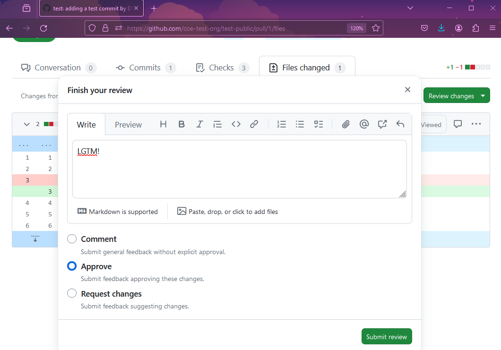
You can leave inline comments in the commits by viewing the file of choice, and then hovering over the line of interest and clicking the + sign:
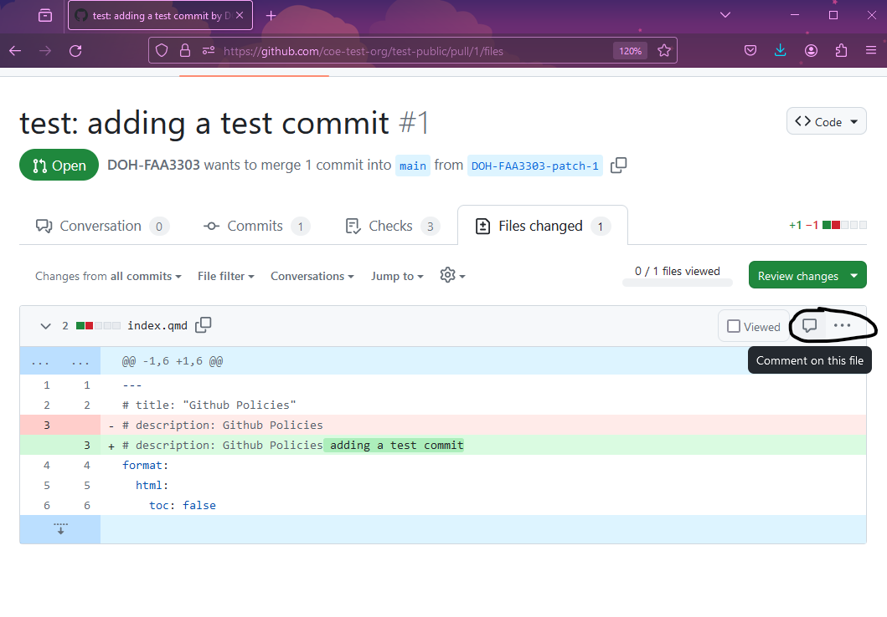
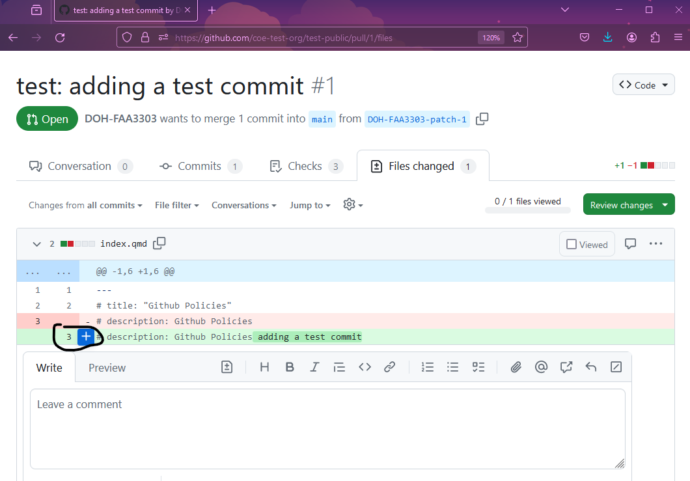
These comments will be tagged in the pull request and will need to be resolved by the person making the request before the code can get merged into the main branch.
Once the pull request has the approvals needed, you can merge it. Note, admins can customize how approvals work. We normally just have one admin or person required to approve a pull request for it to be mergeable. To state again, in the Review changes dropdown there is an option to approve the request - that is what is required.
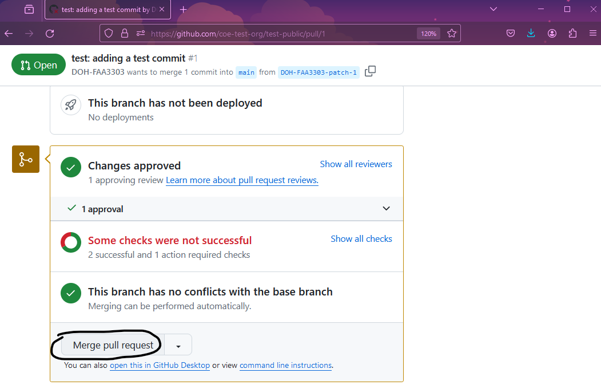
After approval, hopefully you have a message that says This branch has no conflicts with the base branch. If there are conflicts it will prevent you from merging. We require the user who made the commit to resolve merge conflicts. The conflict typically happens when your branch is out of date and it is not lined up with the current main branch. You sometimes need to merge the main branch into your local branch and then commit those changes. This is very scenario dependent and requires some googling. Please reach out to us for help if this happens!
As I mentioned before, I used special trigger words like feat or fix in commit messages. These words indicate that a commit contains a new code feature or a bug fix. They trigger a github action that will produce a changelog, documentation, and a version change in the code based when the branch gets merged to main. Please read more about this topic in release cycles. In summary, there are key words you can add to your commit message that will trigger certain actions.
For example, the word bug will trigger the version patch number to increase, meaning if your current codebase is on version v1.0.0 it will increase the version to v1.0.1 . Here’s what it looks like in Github:
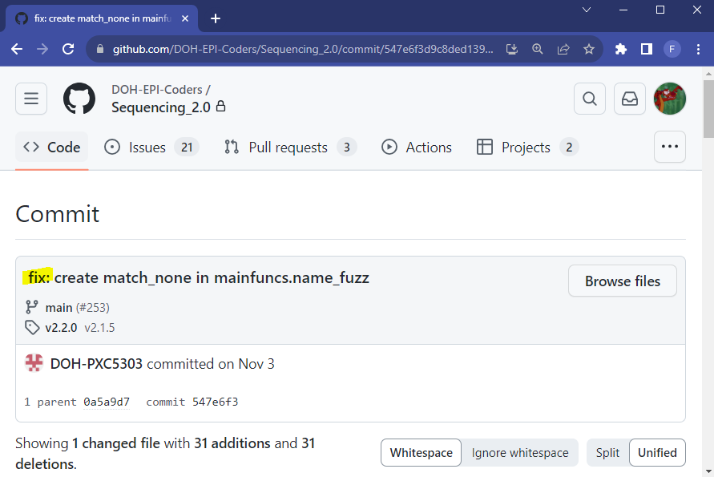
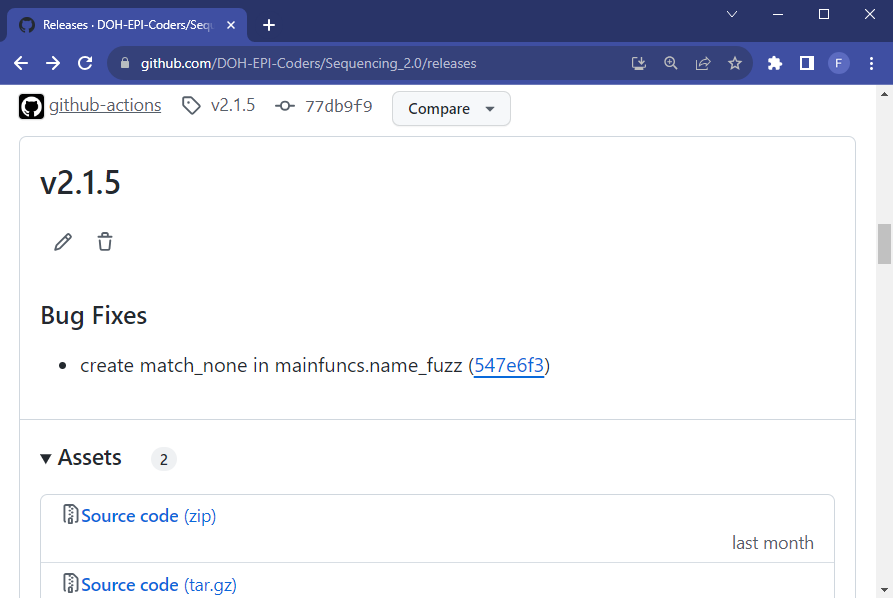
The word feat will trigger a change in the minor version, so it will bump v1.0.0 to v1.1.0. There are many other words that can trigger actions and you can customize them to do what you want.
I strongly recommend implementing this in your repo and working in a release cycle. To give an example, our team has a 1 month release cycle:
Once the code is merged to main, we have a github action that automatically creates our versioning, change logs, documentation, and saves a snapshot of our codebase. The action looks for trigger words (like fix, feat or BREAKING CHANGE) and it will divide the commits that were merged into the main branch and write out all the documentation for the change log. It looks like this:
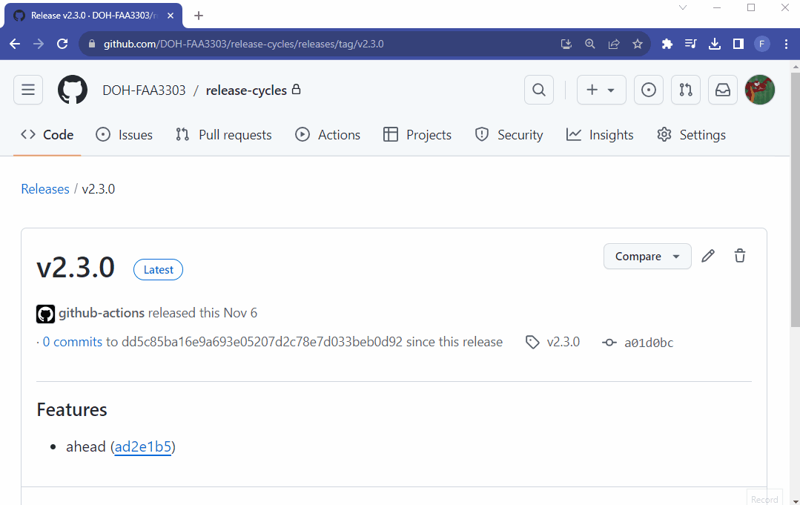
Notice that I can:
For more details, follow the release cycles guide
Milestones, projects, labels, etc.